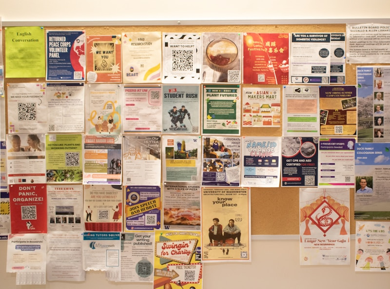

Find resources near you.
Start anywhere. There's no wrong door. Use our tools to find shelters, food, health care, and housing programs in Phoenix and Maricopa County.
Start here
Free, plain-language navigators for the largest U.S. Continuums of Care. Pick your city to get started.

New York City Navigator
Right-to-shelter intake, PATH family system, Covenant House youth services, and the HOME-STAT outreach pathway for NYC (CoC NY-600).
Open navigator →Los Angeles Navigator
LAHSA Coordinated Entry, 211 LA, Skid Row shelters, VA Greater LA, and SSVF veteran pathways for LA County (CoC CA-600).
Open navigator →
Chicago Navigator
DFSS 311 intake, All Chicago Coordinated Entry, Pacific Garden Mission, Ignite youth services, and Jesse Brown VA (CoC IL-510).
Open navigator →
Seattle/King County Navigator
KCRHA Regional Access Points, family shelter intake, YouthCare, DESC, and Compass Housing Alliance (CoC WA-500).
Open navigator →
Maricopa County (Phoenix) Navigator
Human Services Campus / CASS, UMOM family system, HomeBase Youth, and VA Phoenix pathways for Maricopa (CoC AZ-502).
Open navigator →
Tucson/Pima County Navigator
Tucson Pima Collaboration coordinated entry, Gospel Rescue Mission, Old Pueblo Community Services, and youth and veteran pathways (CoC AZ-501).
Open navigator →Flagstaff / Coconino County Navigator
Flagstaff Shelter Services, Catholic Charities PATH, VA homeless program, and youth and veteran pathways for Coconino County (CoC AZ-500).
Open navigator →Raleigh / Wake County Navigator
Oak City Cares coordinated entry, South Wilmington Street Center, Cornerstone PSH, Haven House youth services, and Durham VA veteran pathways for Wake County (CoC NC-507).
Open navigator →
All tools
Browse all available navigators and resource finders. More cities being added — see the full list.
Browse all tools →What do you need right now?
-
Tonight
Emergency shelter
Find a bed for tonight in Phoenix or Maricopa County — intake locations, requirements, and availability.
Open navigator → -
Food
Food banks & meal programs
Free meals, food pantries, SNAP benefits assistance, and community fridges near you.
Find food programs → -
Health
Health & mental health care
Free clinics, behavioral health services, substance use treatment, and prescription assistance.
Find health services → -
Housing
Housing programs & rapid rehousing
Transitional housing, rapid rehousing programs, permanent supportive housing, and rental assistance.
Find housing programs → -
Services
Case management & navigation
Coordinated Entry System access, benefits enrollment, ID recovery, and personalized service navigation.
Find navigation services →
Resource directory
Verified listings for Phoenix and Maricopa County. Hours and availability change — always call ahead to confirm.
Emergency Shelter
Human Services Campus (CASS)
Single AdultsArizona's largest emergency shelter campus. Walk-in intake. Coordinated Entry access on-site. Includes CASS, Lodestar Day Resource Center, Andre House, and 15+ partner organizations.
Not yet re-confirmed with the provider — call before you go · Report a problem
UMOM New Day Centers
FamiliesWhat to do: Families: call the Family Housing Hub, 602-595-8700. Single women: call the Halle Women's Center, 602-362-5833. UMOM does not serve single men. For: Families with children (through the Family Housing Hub); single women without children (Halle Women's Center)
Confirmed on UMOM New Day Centers’s own website · Oct. 26, 2026 · Report a problem
Phoenix Rescue Mission
RecoveryWhat to do: Call the main line to be directed to the right program. For: People facing homelessness, hunger, or addiction
Confirmed on Phoenix Rescue Mission’s own website · Oct. 26, 2026 · Report a problem
The Salvation Army — family shelter
Through the Family Housing HubWhat to do: Reached through the Family Housing Hub (602-595-8700). We could not confirm a Salvation Army shelter address or direct shelter line on its own website (Oct. 2026).
We could not confirm a direct listing on The Salvation Army’s own site · checked Oct. 26, 2026 · Report a problem
Paz de Cristo — Mesa day center (no beds)
MealsWhat to do: A day center with no overnight beds. For: Adults in the East Valley
Confirmed on Paz de Cristo’s own website · Oct. 26, 2026 · Report a problem
Food Programs
St. Vincent de Paul — Phoenix Dining Room
MealsWhat to do: Walk in at meal times. Overnight beds are available here year-round — call to ask whether any are open. For: Anyone experiencing homelessness
Confirmed on Society of St. Vincent de Paul’s own website · Oct. 26, 2026 · Report a problem
St. Vincent de Paul — NextPhase Family Dining Room
Families with kidsWhat to do: Walk in during service hours. For: Families with a child under 18 — open to anyone with a child under 18. Single adults are served at the Phoenix Dining Room instead.
Confirmed on Society of St. Vincent de Paul’s own website · Oct. 26, 2026 · Report a problem
Andre House — meals, showers, laundry, clothing
Hot dinnerWhat to do: Walk in. Lines form before each service. Andre House is not a shelter and does not offer housing. For: Anyone who comes to the door
Confirmed on Andre House of Arizona’s own website · Oct. 26, 2026 · Report a problem
St. Mary's Food Bank — Phoenix Neighborhood Food Center
GroceriesWhat to do: Walk in or drive through. Bring ID and proof of Arizona residence every visit. To find a pantry closer to you, use azfoodhelp.org. For: Arizona residents 18+
Confirmed on St. Mary's Food Bank’s own website · Oct. 26, 2026 · Report a problem
Lodestar Day Resource Center
Meals + ServicesMeals, showers, case management, and service connections for people experiencing homelessness in central Phoenix. Part of the Human Services Campus cluster.
Not yet re-confirmed with the provider — call before you go · Report a problem
For SNAP (food stamp) assistance: call (855) 432-7587 or visit healthearizonaplus.gov.
Health & Medical Care
Circle the City
Free Primary CareThe largest provider of healthcare for people experiencing homelessness in Arizona. Primary care, chronic disease management, wound care, and pharmacy — at no cost to unhoused patients. Walk-ins accepted, no insurance required. Medical respite program available for post-hospital recovery.
Not yet re-confirmed with the provider — call before you go · Report a problem
NATIVE HEALTH Central
MedicalWhat to do: For: Accepts AHCCCS (Medicaid) plans and the American Indian Health Plan; ask about the discount program
Confirmed on NATIVE HEALTH of Phoenix’s own website · Oct. 26, 2026 · Report a problem
Adelante Healthcare
Community HealthFederally qualified health center with multiple Phoenix-area locations. Medical, dental, and behavioral health on a sliding-fee scale. Ask about free dental clinic days and AHCCCS enrollment assistance.
Not yet re-confirmed with the provider — call before you go · Report a problem
No health insurance? You may qualify for free AHCCCS coverage. Call (855) 432-7587 or visit healthearizonaplus.gov.
Mental Health & Crisis Services
988 Suicide & Crisis Lifeline
24/7 — FreeCall or text 988 for trained crisis counselors, available 24/7. No insurance, address, or ID required. Available in English and Spanish.
Not yet re-confirmed with the provider — call before you go · Report a problem
Maricopa County Crisis Services — Walk-In
24/7 Walk-InWalk-in crisis clinic open 24 hours, 7 days a week. No appointment, no insurance required. Crisis counselors can also dispatch a mobile crisis team to your location — this is not a police response.
Not yet re-confirmed with the provider — call before you go · Report a problem
Valle del Sol
Behavioral HealthBehavioral health services across Maricopa County — therapy, psychiatric evaluation, and crisis intervention. Accepts AHCCCS and offers sliding-scale fees. Multiple locations.
Not yet re-confirmed with the provider — call before you go · Report a problem
TERROS Health
Substance UseOutpatient, residential, and detox services across Phoenix. Accepts AHCCCS. Serves adults and youth.
Not yet re-confirmed with the provider — call before you go · Report a problem
Housing Programs & Case Management
Coordinated Entry System — Maricopa County
Housing AccessThe required pathway for accessing HUD-funded housing programs — Rapid Rehousing and Permanent Supportive Housing — in Maricopa County. Clients are assessed and matched based on need. Access through HSC, UMOM, and other designated sites. Ask a case manager or call 211 to get started.
Not yet re-confirmed with the provider — call before you go · Report a problem
Rapid Rehousing (RRH)
Housing AssistanceShort-term rental assistance and services to help people move quickly out of shelter into stable housing. Multiple providers in Maricopa County. Eligibility and availability vary. Access through Coordinated Entry.
Not yet re-confirmed with the provider — call before you go · Report a problem
Wildfire: Igniting Community Action
PreventionEmergency financial assistance and utility support for people at risk of losing housing. Homelessness prevention is more cost-effective than shelter — and often overlooked.
Not yet re-confirmed with the provider — call before you go · Report a problem
Veterans Services
National Call Center for Homeless Veterans
24/7 HotlineFree, 24/7 hotline for veterans experiencing homelessness or at risk. Connects to HUD-VASH, GPD programs, and local VA resources in Phoenix.
Not yet re-confirmed with the provider — call before you go · Report a problem
Phoenix VA Healthcare System
VA ServicesHUD-VASH vouchers with case management, GPD transitional housing, and SSVF rapid rehousing and prevention for low-income veteran families. Contact the VA to be connected to the right program.
Not yet re-confirmed with the provider — call before you go · Report a problem
Youth Services (Under 25)
HomeBase Youth Services (Native American Connections)
Ages 18–24Primary provider for young adults experiencing homelessness in Phoenix. Dorm-style emergency shelter, drop-in center (M–F 7am–4pm) with meals, laundry, showers, and case management, plus transitional living and rapid rehousing. A Youth Coordinated Entry Access Point — standard CE processes are often inappropriate for youth, so HomeBase operates the youth-specific pathway.
Not yet re-confirmed with the provider — call before you go · Report a problem
24/7 Youth Hotline (ages 12–17)
YouthWhat to do: For: Youth ages 12–17
Listed by Keys to Change · Oct. 26, 2026 · Report a problem
Legal Aid & Benefits
Community Legal Services
Free Legal HelpFree legal representation for low-income clients facing eviction, benefits denials, and other civil legal issues. Eviction defense is one of the most effective homelessness prevention tools available.
Not yet re-confirmed with the provider — call before you go · Report a problem
Know a service that should be listed? Contact us — listings are free and added within 48 hours.
Need help right now?
If you're in crisis, call 211 (available 24/7 in Arizona). Dial 211 from any phone to connect with a live navigator who can help you find emergency services tonight.
Call 211 now